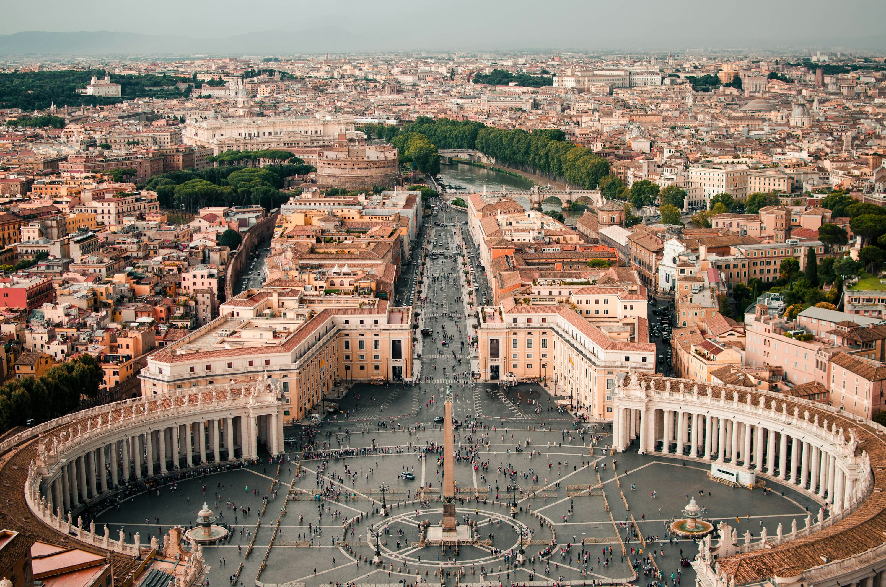

Roma
A capital da Itália, rica em história, cultura e monumentos famosos como o Coliseu, o Vaticano e a Fontana di Trevi.


Descrição
Roma é uma cidade histórica, cheia de monumentos emblemáticos como o Coliseu e o Vaticano. Além de sua rica herança cultural, oferece uma vibrante vida urbana. Explore suas ruínas antigas e igrejas barrocas em cada esquina.
Pontos Turísticos de Roma
-
Panteão: Um dos edifícios mais bem preservados da Roma Antiga, hoje funciona como igreja.
-

Fórum Romano: Coração da Roma Antiga, onde se concentravam os principais edifícios públicos.
-

Piazza Navona: Uma das praças mais bonitas de Roma, com fontes e arquitetura barroca impressionante.
Comidas Típicas de Roma
-

Carbonara: Um prato de massa com molho cremoso, bacon e queijo parmesão.
-

Supplì: Bolinho de arroz frito recheado com mozzarella.